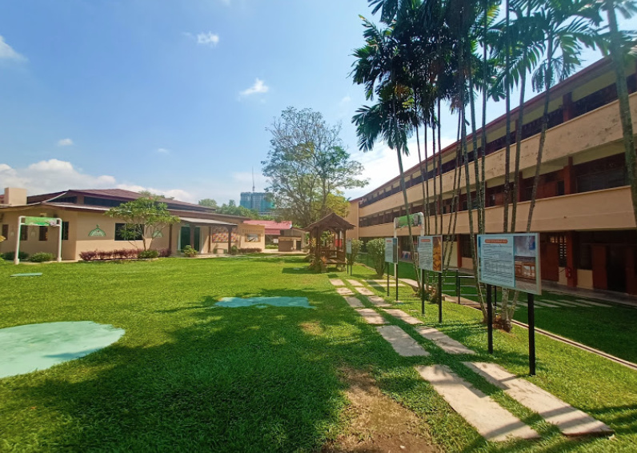
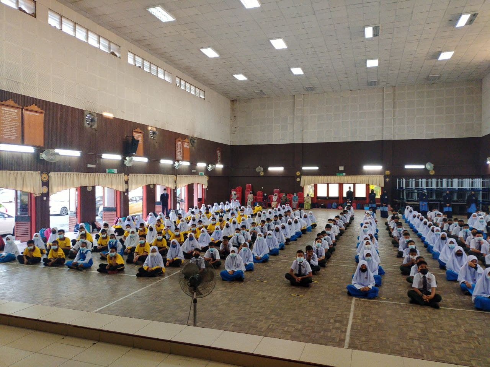

I've always had a fervent passion for learning and a keen interest in exploring new horizons. Navigating the educational landscape
has been a transformative journey for me, marked by both triumphs and challenges. Completing my high school education was a significant
milestone, and I proudly graduated from SMK FELDA BUKIT MENDI, successfully completing my studies up to form 5.
Eager to continue my academic pursuits, I made the decision to embark on the next phase of my educational adventure. I enrolled in
the Science Matriculation Program (STPM) at SMK PURUN BERA PAHANG, recognizing it as a pivotal step towards my higher education goals.
This program, akin to a pre-university examination, not only presented academic challenges but also served as a valuable preparation
ground for the rigors of tertiary education.

Continuing my educational journey beyond the Science Matriculation Program, I am currently pursuing a degree in Business and Management,
specifically Bachelor of Business Administration (Hons.) in Marketing at UiTM Cawangan Kelantan. This academic pursuit represents a significant
step forward in my quest for higher education and a deeper understanding of the business and marketing domain.
The transition to the degree program marks a new chapter in my academic adventure, where I am equipped with the opportunity to delve into the
intricacies of business strategies, marketing principles, and management practices. The curriculum not only broadens my knowledge base but also
provides practical insights that I believe will be instrumental in shaping my future career.